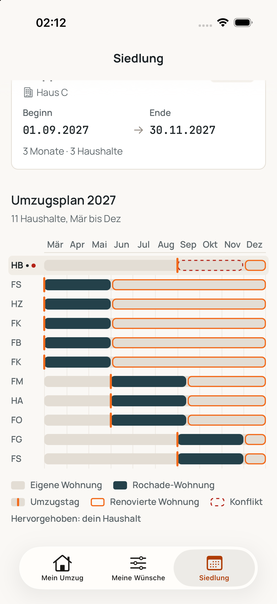
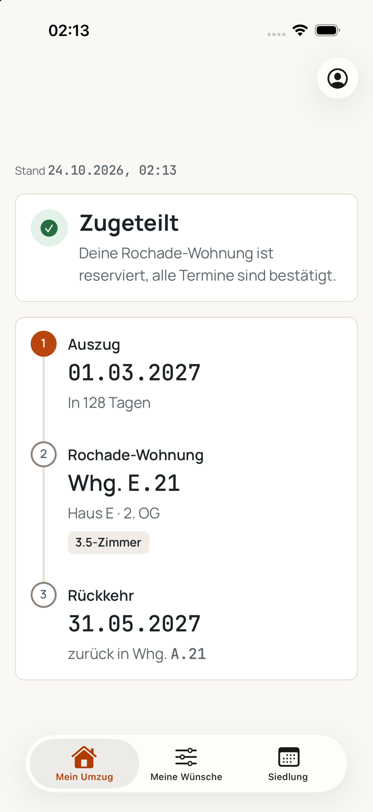

Sanieren, ohne jemanden
rauszuwerfen.
Wenn ein Haus saniert wird, müssen die Bewohnerinnen und Bewohner raus. ROCHADE plant, wer wann in welche freie Wohnung zieht und wann zurück. Niemand wird gekündigt.
So sieht eine Rochade aus
Beispielsiedlung mit drei Häusern und 24 Haushalten. Jeder Chip ist ein Haushalt, der echte Plan läuft ab.
- Haushalt zu Hause
- Haushalt in einer Rochade-Wohnung
- Wohnung in Sanierung
- Freie Wohnung
Drei Schritte. Ein Plan, der jeden Haushalt kennt.
Statt Tabellen, E-Mails und Bauchgefühl: Sie geben ein, was da ist und was die Menschen brauchen. ROCHADE legt den Plan und legt ihn bei jeder Änderung neu.
-
1
Erfassen
Häuser und Wohnungen mit Zimmerzahl und Lift. Haushalte mit dem, was sie brauchen: Grösse, Parterre, Schulkreis, Pflege. Freie Wohnungen in der Siedlung und ausserhalb.
Meier1 Person · 2,5 Zi. · hindernisfreiKeller4 Personen · 4,5 Zi.freiWhg. C-01 · 2,5 Zi. · Parterre -
2
Planen
ROCHADE sucht für jeden Haushalt eine freie Wohnung, die passt: gross genug, hindernisfrei wenn nötig, im richtigen Zeitfenster frei, nie doppelt belegt. Wer die strengsten Anforderungen hat, kommt zuerst.
Meier→Whg. C-01→zurückKeller→Whg. C-32→zurück -
3
Anpassen
Verzögert sich eine Etappe, legen Sie den Plan mit einem Klick neu. ROCHADE zeigt, welche Haushalte betroffen sind, wo es klemmt und warum. Dazu den nächsten Termin, der ohne Konflikt auskommt.
Etappe 1verzögert sich um 2 Monate⚠ 11 Konflikte→Vorschlag: Etappe 2 ab November 2027
Wer saniert, kündigt. Meistens allen.
Frau Meier, 78, wohnt seit 1994 in Höngg. Dann kommt der Brief: Sanierung, alle müssen raus. In Zürich ist das kein Einzelfall.
Mehrfamilienhäuser wurden 2018 bis 2022 in der Schweiz komplett leergekündigt. Jedes Jahr über 2'000 Häuser mit knapp 30'000 Menschen.
Zürcher Kantonalbank auf Basis BFS, 2024 1davon in der Stadt Zürich, fast 12 Prozent aller Fälle. Jedes vierte dieser Gebäude gehörte einem gemeinnützigen Wohnbauträger.
Zürcher Kantonalbank, 2024 1Leerwohnungsziffer der Stadt Zürich am 1. Juni 2026: nur 252 freie Wohnungen. Wer gekündigt wird, findet im Quartier kaum etwas.
Statistik Stadt Zürich, 2026 2Personen, die sich in Zürich für ein Altersheim anmelden, nennen eine Kündigung oder Sanierung als Grund. Schätzung der Fachstelle Zürich im Alter.
Fachstelle Zürich im Alter, zitiert 2022 3Die Alternative zur Kündigung gibt es: die Rochade. Haushalte ziehen in eine freie Wohnung, bis ihre eigene saniert ist, und dann zurück. Nur: Heute wird sie von Hand geplant.
«Die mit Abstand effektivste Massnahme zur Reduktion der Belastung sind Rochaden.» Eine Rochade braucht aber genügend Ausweichwohnungen und ist organisatorisch aufwändig.
49 Mietparteien, vierfacher Aufwand
Die Baugenossenschaft für neuzeitliches Wohnen saniert ihre Siedlung Hönggerberg in Etappen und organisiert dafür eine Rochade für 49 Mietparteien, die danach zurückkehren. Der Vorstand beziffert den Aufwand allein in der Bewirtschaftung auf das Vierfache: pro Haushalt mehrere Übergaben, Abnahmen und Verträge.
Mitgliederzeitschrift bgnzwo, Sommer 2026 5
Der Plan baut sich neu, wenn sich eine Etappe verschiebt.
Ein Dashboard für die ganze Sanierung: Bauetappen, Rochade-Wohnungen und jeder Haushalt mit Auszug, Rückkehr und Status.
- Jede Etappe lässt sich mit einem Klick verschieben, der Plan rechnet sofort nach.
- Konflikte werden erklärt: welche Wohnung fehlt, für wen, ab wann.
- Zuteilungen, Auszug und Rückkehr in einer Tabelle, sortiert nach Etappe.
- Verwaltung und Haushalte sehen denselben Stand.
Probieren: Etappe 1 um zwei Monate verschieben. Der Plan rechnet hier lokal neu.
Mein Umzug: ein Datum, eine Wohnung und ein Satz, wenn sich etwas ändert.
Die App zeigt jedem Haushalt nur, was ihn betrifft: Auszug, Rochade-Wohnung, Rückkehr. Gross geschrieben, nichts unter 13 Punkt.
- Live-Update, wenn die Verwaltung einen Termin ändert, mit altem Datum zum Vergleich.
- Ein Konflikt wird erklärt, nicht rot gemalt: der genaue Grund in einem Satz.
- Wünsche selbst erfassen: Zimmer, Hindernisfreiheit, Schulkreis, Notiz.
- Die ganze Siedlung als Zeitstrahl: wer wann wohin zieht.
Läuft in Expo Go auf dem iPhone, iOS 16.4 oder neuer.


Verwaltungssoftware kennt Mietverträge. Nicht Umzüge.
Garaio REM, Abacus AbaImmo oder Rimo R5 verwalten Verträge und Nebenkosten, emonitor und Flatfox die Bewerbung. Keines dieser Werkzeuge plant, wer während einer Sanierung wo wohnt. 8
Über alle Häuser und Etappen
Nicht pro Liegenschaft, sondern über das ganze Vorhaben. Eine sanierte Wohnung aus Etappe 1 wird zur Rochade-Wohnung für Etappe 2.
Bedürfnisse als harte Regeln
Wer hindernisfrei wohnen muss, bekommt keine Wohnung im dritten Stock ohne Lift. Nie, auch nicht, wenn es gerade praktisch wäre.
Konflikte mit Namen und Grund
«Für Hr. Aydin fehlt ab Juni 2027 eine 2,5-Zimmer-Wohnung» statt «Fehler bei der Zuteilung». Dazu ein Vorschlag, der ihn löst.
Ein Plan, den alle verstehen
Für den Vorstand, für die Mietenden, für die Behörde. Jede Zuteilung lässt sich erklären, jede Änderung nachvollziehen.
Für alle, die sanieren müssen und niemanden verlieren wollen.
Wohnbaugenossenschaften
58'100 gemeinnützige Wohnungen gibt es in der Stadt Zürich, 27 Prozent aller Mietwohnungen. Bis 2050 soll es ein Drittel sein. 6
Städtische Verwaltungen
Wer den eigenen Bestand erneuert, muss erklären können, wo die Menschen in der Zwischenzeit wohnen. Ein belegbarer Plan ist die Antwort.
Institutionelle Eigentümer
Über eine Million Gebäude mit Wohnnutzung gelten als sanierungsbedürftig, saniert wird rund ein Prozent pro Jahr. Das Tempo muss steigen. 7
Steht bei Ihnen eine Etappensanierung an?
Schicken Sie uns Etappenplan und Wohnungsliste. Wir rechnen die Rochade und zeigen Ihnen den Plan in einem Gespräch von 30 Minuten.
ROCHADE ist ein Prototyp, entstanden am ZentralHack 2026 in Zürich. Wir suchen zwei Pilotpartner, die 2027 eine Etappensanierung planen.
Quellen und Belege
- Zürcher Kantonalbank, Jörn Schellenberg und Ingrid Rappl: «Leerkündigungen – ein Dilemma», Immobilien aktuell 2-24, 26. November 2024, auf Basis anonymisierter Personenregisterdaten des Bundesamts für Statistik. zkb.ch
- Stadt Zürich, Statistik Stadt Zürich: «Leichter Anstieg: 252 Leerwohnungen in Zürich», Medienmitteilung, August 2026, Stichtag 1. Juni 2026. stadt-zuerich.ch
- Mieterinnen- und Mieterverband Zürich: «Die Kosten der Verdrängung», Mieten + Wohnen, 25. Mai 2022, mit der Schätzung von Silvia Rigoni, Fachstelle Zürich im Alter («etwa jede zehnte Person»). Keine amtliche Statistik. mieterverband.ch
- Guy Keller: «Gründe und Massnahmen für eine Sanierungen von Liegenschaften im bewohnten Zustand», MAS-Abschlussarbeit, CUREM Universität Zürich, 22. August 2025. Zitat aus dem Fazit; der zweite Satz ist paraphrasiert. curem.uzh.ch (PDF)
- Baugenossenschaft für neuzeitliches Wohnen (bgnzwo), Zürich: «Die grosse Rochade», Mitgliederzeitschrift, Ausgabe Sommer 2026. Aussage eines Vorstandsmitglieds, keine unabhängige Prüfung. bgnzwo.ch (PDF)
- Stadt Zürich, Stadtrat: «Stadtrat setzt aktive Wohnpolitik mit Nachdruck fort», Medienmitteilung, Dezember 2024, Bericht zum wohnpolitischen Grundsatzartikel 2020–2023. stadt-zuerich.ch
- Bundesamt für Energie: Publikation zum Gebäudepark, April 2024; Hochschule Luzern, Beitrag in «Schweizer Wirtschaft», 13. Oktober 2023. Die oft zitierten «1,5 Millionen» stammen aus einem Ratgeber ohne Studienbeleg und werden hier nicht verwendet. pubdb.bfe.admin.ch, hslu.ch (PDF)
- Produktseiten von GARAIO REM, Abacus AbaImmo, W&W Rimo R5, emonitor und Flatfox, abgerufen am 24. Oktober 2026. Ein spezialisiertes Rochade-Werkzeug haben wir in der Schweiz nicht gefunden; in Grossbritannien existiert mit «Decant» von Neo Technology ein Produkt für Mieterumzüge im sozialen Wohnungsbau.
Nicht verwendet, weil nicht belegbar: «13-mal häufiger als in Genf» und «1,5 Millionen sanierungsbedürftige Gebäude». Die Siedlung im Prototyp ist erfunden.